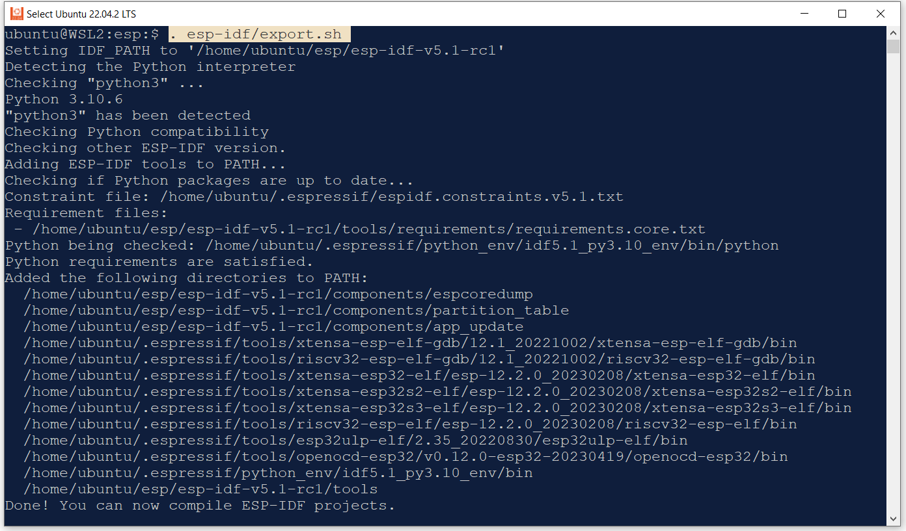

การใช้งาน ESP-IDF บน WSL2 Ubuntu สำหรับ ESP32-C6#
▷ ESP32-C6#
ESP32-C6 Series (released: September 22, 2022) เป็นชิปไมโครคอนโทรลเลอร์ (MCU: Microcontroller Unit) ประเภท SoC (System-on-Chip) ของบริษัท Espressif Systems ชิปรุ่นนี้ทำงานได้ตามสถาปัตยกรรมของชุดคำสั่ง (ISA: Instruction Set Architecture) ที่เรียกว่า RISC-V (pronounced "Risk-Five") ถือว่าเป็นชิปรุ่นถัดไปต่อจาก ESP32-C3 ที่ใช้ซีพียู RISC-V เช่นกัน
คุณลักษณะของชิป ESP32-C6 (ESP32-C6 Series Datasheet)
- CPU Cores:
- High-performance (HP): 32-bit RISC-V CPU, @160 MHz
- Low-power (LP): 32-bit RISC-V CPU, @20MHz
- Storage:
- L1 cache: 32 KB
- ROM: 320KB
- SRAM: 512KB (HP), 16KB (LP)
- Packages (5×5 mm) / GPIOs:
- QFN40 / 30 GPIOs
- QFN32 / 22 GPIOs
- Connectivity:
- 2.4 GHz Wi-Fi 6 (IEEE 802.11b/g/n & 802.11ax)
- 2.4 GHz Bluetooth 5 (LE) radio
- 2.4 GHz IEEE 802.15.4-2015 (ZigBee 3.0 / Thread 1.3 / Matter compliant)
จุดเด่นที่น่าสนใจของชิป ESP32-C6 คือ การรองรับรูปแบบการสื่อสารไร้สายแบบหลายโพรโตคอล ด้วยคลื่น 2.4GHz ได้แก่ BLE / ZigBee / Thread / Matter ซึ่งเหมาะสำหรับการใช้งานด้าน IoT / Smart Home
รูปแบบของฮาร์ดแวร์ที่เกี่ยวข้องกับ ESP32-C6 ของบริษัท Espressif จำแนกตามระดับได้ดังนี้
- ESP32-C6 SoC Devices:
- ESP32-C6, QFN40 (no embedded Flash, Normal temperature)
- ESP32-C6FH4, QFN32 (embedded 4MB Flash, High-temperature)
- Modules: ESP32-C6 chip + QSPI Flash + 40 MHz crystal osc.
- ESP32-C6-WROOM-1(U)
- ESP32-C6-MINI-1(U)
- 85 °C version (N) vs. 105 °C version (H)
- PCB antenna vs. external antenna (U)
- Quad-SPI Flash: 4MB / 8MB / 16MB
- Boards / DevKits:
- ESP32-C6-DevKitC-1
- ESP32-C6-DevKitM-1
รูป: โมดูล ESP32-C6-WROOM-1(U) / ESP32-C6-MINI-1(U)
รูป: บล็อกไดอะแกรมของโมดูล ESP32-C6-WROOM-1(U) / ESP32-C6-MINI-1(U)
รูป: บอร์ด ESP32-C6 Boards (ESP32-C6-WROOM-1 Module)
รูป: บอร์ด ESP32-C6 DevKitC-1
รูป: ESP32-C6 DevKitC-1 Pinout
รูป: ผังวงจรของบอร์ด ESP32-C6 DevKitC-1 v1.2 (Schematic)
ข้อสังเกต: ในช่วงแรก การเขียนโปรแกรม C/C++ สำหรับ ESP32-C6 จะต้องใช้ร่วมกับ ESP-IDF v5.1 (หรือเวอร์ชันสูงกว่า) แต่ล่าสุด บอร์ด ESP32-C6 สามารถใช้ได้กับ Arduino IDE โดยผู้ใช้จะต้องติดตั้ง Arduino-ESP32 Core v3.0.0+
▷ การเตรียมความพร้อมสำหรับการใช้งานซอฟต์แวร์#
ถัดไปเป็นขั้นตอนการติดตั้งและใช้งานซอฟต์แวร์ ESP-IDF v5.1 สำหรับระบบปฏิบัติการ Windows 10 / 11 ที่ได้มีการติดตั้ง WSL2 และใช้ร่วมกับ Ubuntu Linux
ขั้นตอนการดำเนินการ
- ติดตั้ง WSL2 สำหรับระบบปฏิบัติการ Windows 10 / 11 เพื่อให้สามารถใช้งาน Ubuntu Linux ได้
- ติดตั้ง Ubuntu 22.04 LTS สำหรับ WSL2
- ติดตั้งและใช้งาน USBIPD เพื่อให้สามารถใช้งานอุปกรณ์ USB Devices จาก WSL2 - Ubuntu ได้
- ดาวน์โหลดไฟล์ของ ESP-IDF จาก Github และติดตั้งให้พร้อมใช้งานสำหรับ Ubuntu
- สร้างโปรเจกต์ตัวอย่างและทำขั้นตอน Build เพื่อสร้างไฟล์เฟิร์มแวร์ (.bin) สำหรับบอร์ด ESP32-C6
- อัปโหลดไฟล์เฟิร์มแวร์ของโค้ดตัวอย่าง (.bin) ไปยังบอร์ดไมโครคอนโทรลเลอร์
สำหรับขั้นตอนที่ 1-3 แนะนำให้ศึกษาและทำตามเอกสารของ Microsoft ต่อไปนี้
- Windows Subsystem for Linux Documentation (Update: June 27, 2022)
- Install Linux on Windows with WSL (Update: January 12, 2023)
- Basic commands for WSL (Update: March 20, 2023)
- Connecting USB Devices from WSL2-Ubuntu (Update: March 20, 2023)
ตัวอย่างการทำคำสั่งเกี่ยวกับ WSL2 ใน Windows Terminal เพื่อดูว่า พร้อมใช้งานแล้วหรือไม่
รูป: ตัวอย่างการทำคำสั่ง WSL2
โดยทั่วไป การทำคำสั่งต่าง ๆ ใน WSL2 - Ubuntu จะไม่สามารถใช้งานอุปกรณ์ USB ได้โดยตรง เช่น เมื่อมีการเสียบสาย USB เชื่อมต่อบอร์ด ESP32 กับคอมพิวเตอร์ของผู้ใช้ ดังนั้นจึงจะต้องมีการติดตั้งซอฟต์แวร์ของ The USBIPD-WIN Project เพื่อสร้างรูปแบบการเชื่อมต่อแบบ USB-over-IP
การติดตั้ง USBIPD แบ่งเป็นสองส่วน คือ การทำคำสั่งด้วย Windows PowerShell
เพื่อติดตั้งซอฟต์แวร์ USBIPD-WIN - Releases
(ได้ทดลองติดตั้งและใช้ไฟล์ usbipd-win_3.0.0.msi)
และการทำคำสั่งใน Ubuntu Linux Terminal เพื่อติดตั้งและใช้งาน USBIP Tools
$ sudo apt install linux-tools-generic hwdata
$ ls /usr/lib/linux-tools/*/usbip | tail -n1
/usr/lib/linux-tools/5.15.0-73-generic/usbip
$ sudo update-alternatives --remove usbip /usr/local/bin/usbip
$ sudo update-alternatives --install /usr/local/bin/usbip usbip \
`ls /usr/lib/linux-tools/*/usbip | tail -n1` 20
นอกจากนั้นจะต้องมีการเปิดใช้งาน Systemd สำหรับ WSL2 - Ubuntu
โดยการสร้างไฟล์ /etc/wsl.conf
# Edit the /etc/wsl.conf` file
$ sudo nano /etc/wsl.conf
และใส่ข้อความดังนี้
# Add the following lines to enable Systemd on WSL-Ubuntu boot
[boot]
systemd=true
แล้วบันทึกการเปลี่ยนแปลงแก้ไขลงไฟล์ /etc/wsl.conf (กด Ctrl+o แล้ว Enter
และ Ctrl+x สำหรับ nano) และแนะนำให้รีบูทคอมพิวเตอร์
▷ การติดตั้งและใช้งาน ESP-IDF v5.1 สำหรับ Ubuntu#
เปิด Linux Terminal ใน WSL2 - Ubuntu แล้วทำคำสั่งต่อไปนี้
เพื่อดาวน์โหลด ESP-IDF v5.1-rc1 (ด้วยการทำคำสั่ง Git Clone)
มายังคอมพิวเตอร์ของผู้ใช้ และเก็บไว้ในไดเรกทอรี $HOME/esp
# Install git
$ sudo apt install git
# Create a directory for ESP-IDF: $HOME/esp
$ mkdir -p $HOME/esp
# Change the working directory to the user home directory
$ cd $HOME/esp
# Clone the ESP-IDF (v5.1-rc1 release), including all submodules
$ git clone -b v5.1-rc1 --recursive \
https://github.com/espressif/esp-idf.git esp-idf-v5.1-rc1
เมื่อได้ทำคำสั่ง git clone แล้ว จะได้ไดเรกทอรีใหม่ชื่อ esp-idf-v5.1-rc1 และถัดไปจะสร้าง
Soft Link เพื่อใช้งานในชื่อ esp-idf แล้วจึงทำคำสั่งเพื่อติดตั้งซอฟต์แวร์ที่เกี่ยวข้องกับ
ESP-IDF
# Create a soft link for the 'esp-idf' subdirectory
$ ln -s esp-idf-v5.1-rc1 esp-idf
# Show the subdirectories under esp-idf
$ tree -L 2
# Install the ESP-IDF tools
$ chmod +x esp-idf/install.sh
$ esp-idf/install.sh
# Export environment variables for ESP-IDF tools
$ . esp-idf/export.sh
รูปตัวอย่างการทำคำสั่งต่าง ๆ มีดังนี้
การทำคำสั่ง git clone
การทำคำสั่งเพื่อแสดงรายการไดเรกทรอรีและไฟล์ภายใต้ $HOME/esp/esp-idf
การทำคำสั่งจากไฟล์สคริปต์ esp-idf/install.sh

การทำคำสั่ง . esp-idf/export.sh

ลองทำคำสั่ง idf.py เช่น ตรวจสอบเวอร์ชันของ ESP-IDF ที่ได้ติดตั้งและใช้งาน
และแสดงรายการชื่อของชิป ESP32 ที่สามารถเลือกใช้ได้
# Show the ESP-IDF version
$ idf.py --version
ESP-IDF v5.1-rc1
# List all supported ESP32 target series
$ idf.py --list-targets
esp32
esp32s2
esp32c3
esp32s3
esp32c2
esp32c6
esp32h2
▷ การสร้างโปรเจกต์ใหม่จากตัวอย่างของ ESP-IDF#
เมื่อได้ลองใช้คำสั่ง idf.py ได้แล้ว ถัดไปเป็นการสร้างโปรเจกต์จากตัวอย่าง
($HOME/esp/esp-idf/examples/get-started/blink)
เพื่อทำให้ RGB LED (WS2812B) บนบอร์ด ESP32-C6 DevKitC-1
กระพริบได้
เริ่มต้นด้วยการสร้างไดเรกทอรีใหม่ เช่น $HOME/esp/projects
แล้วสำเนาไฟล์ตัวอย่างมาเก็บไว้ในไดเรกทอรีชื่อ blink
เลือกชิปเป้าหมายด้วยการทำคำสั่ง idf.py set-target esp32c6
จากนั้นทำคำสั่ง idf.py menuconfig เพื่อตั้งค่าสำหรับโค้ดตัวอย่าง
(เช่น เลือก Example Configuration -- blink LED type
ให้เป็น RMT Addressable LED และเลือกใช้ขา GPIO8)
แล้วจึงทำคำสั่ง idf.py build เพื่อคอมไพล์โค้ดในโปรเจกต์
# Create a directory for ESP-IDF projects
$ mkdir -p $HOME/esp/projects && cd $HOME/esp/projects
# Make a copy of the official example called 'blink'
$ cp -r $HOME/esp/esp-idf/examples/get-started/blink blink
# Change the working directory to ./blink/
$ cd blink
# Set the target device
$ idf.py set-target esp32c6
# Configure the SDK
# Example Configuration
# -> blink LED type (RMT Addressable LED)
# - Select RMT pin (GPIO8)
# - Set the blinking period in the Blink period in ms option.
$ idf.py menuconfig
# Build the firmware file
$ idf.py build
รูปแสดงตัวอย่างการทำขั้นตอน
เมื่อทำขั้นตอน Build ได้แล้ว จะได้ไฟล์ .bin ของโปรเจกต์ดังนี้
./build/blink.bin
./build/partition_table/partition-table.bin
./build/bootloader/bootloader.bin
ขั้นตอนถัดไปเป็นการทำคำสั่ง idf.py flash เพื่ออัปโหลดไฟล์เฟิร์มแวร์ไปยังบอร์ด ESP32-C6
▷ การอัปโหลดไฟล์ไปยังบอร์ด ESP32-C6#
เริ่มต้นด้วยการเชื่อมต่อบอร์ด ESP32-C6 (ESP32-C6 DevKitC-1) โดยใช้สาย USB เชื่อมต่อที่พอร์ต USB Type-C (UART) กับคอมพิวเตอร์ของผู้ใช้
จากนั้นจะต้องทำให้ WSL-Ubuntu มองเห็นอุปกรณ์ USB หรือบอร์ดดังกล่าว โดยใช้ USBIPD-Win
เปิดใช้งาน Windows PowerShell (Administrator Mode) แล้วทำคำสั่ง
usbipd wsl ต่อไปนี้ เช่น
- แสดงรายการอุปกรณ์ USB ที่มองเห็นและใช้งานได้โดยทำคำสั่ง
usbipd wsl list - เลือกอุปกรณ์ USB ที่ต้องการมองเห็นได้ใน WSL2 - Ubuntu
โดยใช้คำสั่ง
usbipd wsl attach
# List all of the USB devices connected to Windows
> usbipd wsl list
# Select the bus ID of the device you'd like to attach to WSL
> usbipd wsl attach --busid <busid>
ตัวอย่างการทำคำสั่งเพื่อแสดงรายการอุปกรณ์ USB
การเลือกอุปกรณ์โดยระบุหมายเลข BUSID ซึ่งในตัวอย่างก็คือ บอร์ด ESP32-C6 ที่มีชิป USB-Bridge เป็น CH343 เมื่อทำคำสั่งแล้วจะทำให้อุปกรณ์มองเห็นและใช้งานได้ ภายใน WSL-Ubuntu
ถัดไปเป็นการทำคำสั่งใน Terminal ของ WLS2 - Ubuntu
เพื่อตรวจสอบดูว่า มองเห็นบอร์ด ESP32-C6 หรือไม่ จากการคำสั่งในรูปตัวอย่าง
จะเห็นได้ว่า มองเห็นอุปกรณ์ตรงกับ /dev/ttyACM0
จากนั้นให้ทำคำสั่ง idf.py flash ดังนี้
# Upload the firmware file to the target board
# (typically attached to /dev/ttyACM0 or /dev/ttyUSB0)
$ idf.py -p /dev/ttyACM0 flash
ตัวอย่างข้อความจากการทำคำสั่ง idf.py -p /dev/ttyACM0 flash ได้สำเร็จแล้ว
การใช้งาน ESP-IDF ใน Linux Terminal แบบ Command Line อาจจะไม่ค่อยสะดวกนัก อีกตัวเลือกหนึ่งคือ การใช้งานซอฟต์แวร์ VS Code IDE และติดตั้ง Espressif IDF Extension ให้ใช้งาน ESP-IDF ที่ได้ติดตั้งไว้ใน WSL-Ubuntu
ขั้นตอนการติดตั้งและใช้งาน ดูได้จาก
vscode-esp-idf-extension/docs/ เช่น
เมื่อได้ติดตั้ง VS Code IDE สำหรับ Windows ได้แล้ว ก็สามารถเรียกใช้จาก WSL2 - Ubuntu ได้เช่นกัน ตรวจสอบได้ด้วยคำสั่งต่อไปนี้
$ which code
/mnt/c/Program Files/Microsoft VS Code/bin/code
หรือเรียกใช้ได้ ด้วยการทำคำสั่ง code
$ code .
ข้อสังเกต: ผู้ใช้ระบบปฏิบัติการ Windows สามารถติดตั้ง VS Code IDE + Espressif ESP-IDF Extension และ ESP-IDF Tools (for Windows) โดยไม่จำเป็นต้องใช้งานผ่าน WSL2 Ubuntu ก็ได้
ถัดไปเป็นตัวอย่างการใช้งาน VS Code IDE (ใช้งานแบบ Remote Development ไปยัง WSL2 - Ubuntu) และมีการติดตั้งและตั้งค่าการใช้งาน Espressif ESP-IDF Extension ตามลำดับ
ในขั้นตอน ESP-IDF Setup สามารถเลือกใช้ ESP-IDF ที่ได้มีการติดตั้งและอยู่ในระบบแล้ว ไม่จำเป็นต้องดาวน์โหลดและติดตั้งใหม่

เปิดโปรเจกต์ตัวอย่าง blink ที่ได้เคยสร้างไว้แล้ว
และลองทำคำสั่ง idf.py ภายในหน้าต่าง Terminal ของ VS Code IDE
ตัวอย่างการทำคำสั่ง idf.py menuconfig
ตัวอย่างการทำคำสั่งเพื่ออัปโหลดไฟล์เฟิร์มแวร์ไปยังบอร์ด (สามารถเลือกทำคำสั่งจากการคลิกไอคอนบนแถบเครื่องมือด้านล่างได้)
▷ กล่าวสรุป#
บทความนี้ได้นำเสนอบอร์ด Espressif ESP32-C6 และสาธิตการติดตั้งใช้งานซอฟต์แวร์ เพื่อทดลองคอมไพล์โค้ดตัวอย่างโดยใช้ ESP-IDF v5.1 สำหรับ WSL2 - Ubuntu 22.04 LTS ภายใต้ระบบปฏิบัติการ Windows 10 / 11 เมื่อทำขั้นตอนต่าง ๆ ได้สำเร็จแล้ว ผู้ใช้สามารถสร้างไฟล์ .bin เพื่อนำไปอัปโหลดและทดลองใช้กับบอร์ด ESP32-C6 DevKitC-1 ได้ในเบื้องต้น
This work is licensed under a Creative Commons Attribution-ShareAlike 4.0 International License.
Created: 2023-06-15 | Last Updated: 2023-11-18